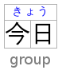

Abstract
The ruby markup model currently described in the HTML specification is limited in its
support for a number of features, notably jukugo and double-sided ruby, as well as inline
ruby. This specification addresses these issues by introducing new elements and changing
the ruby processing model. Specific care has been taken to ensure that authoring remains
as simple as possible.
This document was largely developed to address the shortcomings listed in
Use Cases & Exploratory Approaches for Ruby Markup. [ruby-use-cases]
Status of This Document
This section describes the status of this document at the time of its publication. Other
documents may supersede this document. A list of current W3C publications and the latest revision
of this technical report can be found in the W3C technical reports
index at http://www.w3.org/TR/.
This specification is an
extension
specification to HTML.
This document was published by the HTML Working Group as a First Public Working Draft.
This document is intended to become a W3C Recommendation.
If you wish to make comments regarding this document, please send them to
public-html@w3.org
(subscribe,
archives).
All comments are welcome.
Publication as a First Public Working Draft does not imply endorsement by the W3C Membership.
This is a draft document and may be updated, replaced or obsoleted by other documents at
any time. It is inappropriate to cite this document as other than work in progress.
This document was produced by a group operating under the
5 February 2004 W3C Patent Policy.
W3C maintains a public list of any patent disclosures
made in connection with the deliverables of the group; that page also includes instructions for
disclosing a patent. An individual who has actual knowledge of a patent which the individual believes contains
Essential Claim(s) must disclose the
information in accordance with section
6 of the W3C Patent Policy.
1. Changes compared to the current ruby model
The following changes are made to HTML by this document:
-
ruby nested inside ruby now represents its
children (in other words, it is no longer meaningful, which reflects implementations);
-
new
rb and rtc elements have been introduced
to support cases in which explicit bases and containers are needed (explicit based are
relatively common in existing content);
-
the algorithm for processing ruby markup has been changed (note that if this
extension is rejected, the original algorithm will still need to be modified because
it is buggy).
Some further changes will be required to HTML if this document is merged in. Of those, some
are for paraphernalia (element index and the such) while others are more involved
(changes to parsing to auto-close some elements) and in some cases optional.
Changes to [WEBVTT] will be required in order to match this model. Also,
rb needs to be removed from the obsolete elements.
2. The ruby element
- Categories:
- Flow content.
- Phrasing content.
- Palpable content.
-
Contexts in which this element can be used:
- Where phrasing content is expected.
- Content model:
- See prose.
- Content attributes:
- Global attributes
- DOM interface:
- Uses
HTMLElement.
The ruby element allows one or more spans of phrasing content to be marked
with ruby annotations. Ruby annotations are short runs of text presented alongside base
text, primarily used in East Asian typography as a guide for pronunciation or to include
other annotations. In Japanese, this form of typography is also known as
furigana. A more complete introduction to ruby can be found in the Use Cases
& Exploratory Approaches for Ruby Markup document as well as in CSS Ruby
Module Level 1. [ruby-use-cases] [css3-ruby]
The content model of ruby elements consists of one or more of the following
sequences:
-
One or more phrasing content nodes or
rb elements.
-
One or more
rt or rtc elements, each of which either immediately
preceded or followed by an rp elements.
The ruby, rb, rtc, and rt elements can
be used for a variety of kinds of annotations, including in particular (though by no means
limited to) those described below. For more details on Japanese Ruby in particular, and how
to render Ruby for Japanese, see Requirements for Japanese Text Layout.
[JLREQ] The rp element can be used as fallback content when ruby
rendering is not supported.
- Mono-ruby for individual base characters
-
Annotations (the ruby text) are associated individually with each ideographic character
(the base text). In Japanese this is typically hiragana or katakana characters used to
provide readings of kanji characters.
Example 1
<ruby>base<rt>annotation</ruby>
When no rb element is used, the base is implied, as above. But you can also
make it explicit. This can be useful notably for styling, or when consecutive bases are
to be treated as a group, as in the jukugo ruby example further down.
Example 2
<ruby><rb>base<rt>annotation</ruby>
In the following example, notice how each annotation corresponds to a single base
character.
Example 3
<ruby>日<rt>に</rt></ruby><ruby>本<rt>ほん</rt></ruby>
<ruby>語<rt>ご</rt></ruby>で<ruby>書<rt>か</rt></ruby>
いた<ruby>作<rt>さく</rt></ruby><ruby>文<rt>ぶん</rt></ruby>です。
Ruby text interspersed in regular text provides structure akin to the following image:

This example can also be written as follows, using one ruby element with
two segments of base text and two annotations (one for each) rather than two
back-to-back ruby elements each with one base text segment and annotation
(as in the markup above):
Example 4
<ruby>日<rt>に</rt>本<rt>ほん</rt>語<rt>ご</rt></ruby>
で<ruby>書<rt>か</rt></ruby>
いた<ruby>作<rt>さく</rt>文<rt>ぶん</rt></ruby>です。
- Group ruby
-
Group ruby is often used where phonetic annotations don't map to discreet base
characters, or for semantic glosses that span the whole base text. For example, the word
"today" is written with the characters 今日, literally "this day". But it's pronounced きょう
(kyou), which can't be broken down into a "this" part and a "day" part. In typical
rendering, you can't split text that is annotated with group ruby; it has to wrap as a
single unit onto the next line. When a ruby text annotation maps to a base that
is comprised of more than one character, then that base is grouped.
The following group ruby:

Can be marked up as follows:
Example 5
<ruby>今日<rt>きょう</ruby>
- Jukugo ruby
-
Jukugo refers to a Japanese compound noun, i.e. a word made up of more than one
kanji character. Jukugo ruby is a term that is used not to describe ruby
annotations over jukugo text, but rather to describe ruby with a behaviour slightly
different from mono or group ruby. Jukugo ruby is similar to mono ruby, in that there is
a strong association between ruby text and individual base characters, but the ruby text
is typically rendered as grouped together over multiple ideographs when they are on the
same line.
The distinction is captured in this example:

Which can be marked up as follows:
Example 6
<ruby>法<rb>華<rb>経<rt>ほ<rt>け<rt>きょう</ruby>
In this example, each rt element is paired with its respective
rb element, the difference with an interleaved
rb/rt approach being that the sequences of both base text and
ruby annotations are implicitly placed in common containers so that the grouping
information is captured.
Note
For more details on
Jukugo Ruby
rendering, see Appendix F in the Requirements for Japanese Text Layout
and Use Case C: Jukugo ruby in the Use Cases & Exploratory Approaches for Ruby
Markup. [JLREQ] [ruby-use-cases]
- Inline ruby
-
In some contexts, for instance when the font size or line height are too small for ruby
to be readable, it is desirable to inline the ruby annotation such that it appears in
parentheses after the text it annotates. This also provides a convenient fallback
strategy for user agents that do not support rendering ruby annotations.
Inlining takes grouping into account. For example, Tokyo is written with two kanji
characters, 東, which is pronounced とう, and 京, which is pronounced きょう. Each base
character should be annotated individually, but the fallback should be 東京(とうきょう) not
東(とう)京(きょう). This can be marked up as follows:
Example 7
<ruby>東<rb>京<rt>とう<rt>きょう</ruby>
Note that the above markup will enable the usage of parentheses when inlining for
browsers that support ruby layout, but for those that don't it will fail to provide
parenthetical fallback. This is where the rp element is useful. It can be
inserted into the above example to provide the appropriate fallback when ruby layout is
not supported:
Example 8
<ruby>東<rb>京<rp>(</rp><rt>とう<rt>きょう<rp>)</rp></ruby>
- Text with both phonetic and semantic annotations (double-sided ruby)
-
Sometimes, ruby can be used to annotate a base twice.
In the following example, the Chinese word for San Francisco (旧金山, i.e. “old gold
mountain”) is annotated both using pinyin to give the pronunciation, and with the
original English.

Which is marked up as follows:
Example 9
<ruby><rb>旧<rb>金<rb>山<rt>jiù<rt>jīn<rt>shān<rtc>San Francisco</ruby>
In this example, a single base run of three base characters is annotated with three
pinyin ruby text segments in a first (implicit) container, and an rtc
element is introduced in order to provide a second single ruby text annotation
being the city's English name.
We can also revisit our jukugo example above with 上手 ("skill") to show how it can be
annotation in both kana and romaji phonetics while at the same time maintaining the
pairing to bases and annotation grouping information.

Which is marked up as follows:
Example 10
<ruby><rb>上<rb>手<rt>じよう<rt>ず<rtc><rt>jou<rt>zu</ruby>
Text that is a direct child of the rtc element implicitly produces a ruby
text segment as if it were contained in an rt element. In this contrived
example, this is shown with some symbols that are given names in English and French with
annotations intended to appear on either side of the base symbol.
Example 11
<ruby>
♥<rt>Heart<rtc lang=fr>Cœur</rtc>
☘<rt>Shamrock<rtc lang=fr>Trèfle</rtc>
✶<rt>Star<rtc lang=fr>Étoile
</ruby>
Similarly, text directly inside a ruby element implicitly produces a ruby
base as if it were contained in an rb element, and rt children
of ruby are implicitly contained in an rtc container. In
effect, the above example is equivalent (in meaning, though not in the DOM it produces)
to the following:
Example 12
<ruby>
<rb>♥</rb><rtc><rt>Heart</rt></rtc><rtc lang=fr><rt>Cœur</rt></rtc>
<rb>☘</rb><rtc><rt>Shamrock</rt></rtc><rtc lang=fr><rt>Trèfle</rt></rtc>
<rb>✶</rb><rtc><rt>Star</rt></rtc><rtc lang=fr><rt>Étoile</rt></rtc>
</ruby>
Within a ruby element, content is parcelled into a series of ruby segments. Each ruby
segment is described by:
-
Zero or more ruby bases, each of which is a DOM range that
may contain phrasing content or an
rb element.
-
A base range, that is a DOM range including all the bases. This is the
ruby base container.
-
Between zero and two ruby text containers which may
correspond to explicit
rtc elements, or to sequences of rt
elements implicitly recognised as contained in an anonymous ruby text container.
Each ruby text container is described by zero or more ruby text annotations each of which is a DOM range that may contain
phrasing content or an rt element, and an annotations range that is a range
including all the annotations for that container. A ruby text container is also
known (primarily in a CSS context) as a ruby annotation container.
Furthermore, a ruby element contains ignored ruby content. Ignored ruby content
does not form part of the document's semantics. It consists of some inter-element
whitespace and rp elements, the latter of which are used for legacy user
agents that do not support ruby at all.
The process of annotation pairing associates ruby
annotations with ruby bases. Within each ruby segment,
each ruby base in the ruby base container is paired with one
ruby text annotation from the ruby text container, in order. If there are not
enough ruby text annotations in a
ruby annotation container, the last one is associated with any excess
ruby bases. (If there are not any in the
ruby annotation container, an anonymous empty one is assumed to exist.) If there are
not enough ruby bases, any remaining
ruby text annotations are assumed to be associated with
empty, anonymous bases inserted at the end of the ruby base container.
Note that the terms ruby segment, ruby base, ruby text annotation,
ruby text container, ruby base container, and ruby annotation container
have their equivalents in CSS Ruby Module Level 1. [css3-ruby]
Informally, the segmentation and categorisation algorithm below performs a simple set of
tasks. First it processes adjacent rb elements, text nodes, and non-ruby
elements into a list of bases. Then it processes up to two rtc elements or
sequences of rt elements that are considered to automatically map to an
anonymous ruby text container. Put together these data items form a ruby
segment as detailed in the data model above. It will continue to produce such segments
until it reaches the end of the content of a given ruby element. The complexity
of the algorithm below compared to this informal description stems from the need to support
an author-friendly syntax and being mindful of inter-element white space.
At any particular time, the segmentation and categorisation of content of a
ruby element is the result that would be obtained from running the
following algorithm:
-
Let root be the
ruby element for which the algorithm is
being run.
- Let index be 0.
- Let ruby segments be an empty list.
- Let current bases be an empty list of DOM ranges.
- Let current bases range be null.
- Let current bases range start be null.
- Let current annotations be an empty list of DOM ranges.
- Let current annotations range be null.
- Let current annotations range start be null.
- Let current annotation containers be an empty list.
- Let current automatic base nodes be an empty list of DOM Nodes.
- Let current automatic base range start be null.
-
If root has a
ruby element ancestor, then abort these
steps.
-
Process a ruby child: If index is equal to or greater than the number of
child nodes in root, then run the steps to commit a ruby segment,
return ruby segments, and abort these steps.
-
Let current child be the indexth node in root.
-
If current child is not a Text node and is not an Element node,
then increment index by one and jump to the step labelled process a ruby
child.
-
If current child is an
rp element, then increment
index by one and jump to the step labelled process a ruby child. (Note
that this has the effect of including this element in any range that we are currently
processing. This is done intentionally so that misplaced rp can be
processed correctly; semantically they are ignored all the same.)
-
If current child is an
rt element, then run these substeps:
- Run the steps to commit an automatic base.
- Run the steps to commit the base range.
-
If current annotation containers contains two elements, then run the steps
to commit a ruby segment.
-
If current annotations is empty, set current annotations range
start to the value of index.
-
Create a new DOM range whose start is the boundary point (root, index) and
whose end is the boundary point (root, index plus
one), and append it at the end of current annotations.
-
Increment index by one and jump to the step labelled process a ruby
child.
-
If current child is an
rtc element, then run these
substeps:
- Run the steps to commit an automatic base.
- Run the steps to commit the base range.
- Run the steps to commit current annotations.
-
If current annotation containers contains two elements, then run the steps
to commit a ruby segment.
-
Create a new ruby annotation container. It is described by the list of
annotations returned by running the steps to process an
rtc
element and a DOM range whose start is the
boundary point (root, index)
and whose end is the boundary point (root, index plus
one). Append this new ruby annotation container at the end of current
annotation containers.
-
If current annotation containers contains two elements, then run the steps
to commit a ruby segment.
-
Increment index by one and jump to the step labelled process a ruby
child.
-
If current child is a
Text node and is inter-element
whitespace, then run these substeps:
-
If current annotations is not empty, increment index by one and
jump to the step labelled process a ruby child.
-
If current annotation containers does not contain two elements, then run
the following substeps:
- Let lookahead index be set to the value of index.
- Peek ahead: Increment lookahead index by one.
-
If lookahead index is equal to or greater than the number of
child nodes in root, then abort these substeps.
-
Let peek child be the lookahead indexth node in
root.
-
If peek child is a
Text node and is inter-element
whitespace, then jump to the step labelled peek ahead.
-
If peek child is an
rt element, an
rtc element, or an rp element, then set
index to the value of lookahead index and jump to the step
labelled process a ruby child.
-
If current annotations is not empty or if current annotation
containers is not empty, then run the steps to commit a ruby segment.
-
If current child is an
rb element, then run these substeps:
- Run the steps to commit an automatic base.
-
If current bases is empty, then set current bases range start to
the value of index.
-
Create a new DOM range whose start is the boundary point (root, index) and
whose end is the boundary point (root, index plus
one), and append it at the end of current bases.
-
Increment index by one and jump to the step labelled process a ruby
child.
-
If current automatic base nodes is empty, set current automatic base range
start to the value of index.
-
Append current child at the end of current automatic base nodes.
-
Increment index by one and jump to the step labelled process a ruby
child.
When the steps above say to commit a ruby segment, it means to run the
following steps at that point in the algorithm:
- Run the steps to commit an automatic base.
-
If current bases, current annotations, and current annotation
containers are all empty, abort these steps.
- Run the steps to commit the base range.
- Run the steps to commit current annotations.
-
Create a new ruby segment. It is described by a list of bases set to current
bases, a base DOM range set to current bases range, and a first and
second ruby annotation containers that are
respectively the first and second items of the current annotation containers
list. Append this new ruby segment at the end of ruby segments.
- Let current bases be an empty list.
- Let current bases range be null.
- Let current bases range start be null.
- Let current annotation containers be an empty list.
When the steps above say to commit the base range, it means to run the following
steps at that point in the algorithm:
- If current bases is empty, abort these steps.
- If current bases range is not null, abort these steps.
-
Let current bases range be a DOM range whose start is the boundary
point (root, current bases range start) and whose end is the boundary point
(root, index).
When the steps above say to commit current annotations, it means to run the
following steps at that point in the algorithm:
-
If current annotations is not empty and current annotations range is
null let current annotations range be a DOM range whose start is the boundary
point (root, current annotations range start) and whose end is the boundary point
(root, index).
-
If current annotations is not empty, create a new ruby annotation
container. It is described by an annotations list set to current
annotations and a range set to current annotations range. Append this new
ruby annotation container at the end of current annotation containers.
- Let current annotations be an empty list of DOM ranges.
- Let current annotations range be null.
- Let current annotations range start be null.
When the steps above say to commit an automatic base, it means to run the
following steps at that point in the algorithm:
-
If current automatic base nodes is empty, abort these steps.
-
If current automatic base nodes contains nodes that are not
Text
nodes, or Text nodes that are not inter-element whitespace, then
run these substeps:
-
It current bases is empty, set current bases range start to the
value of current automatic base range start.
-
Create a new DOM range whose start is the boundary point (root, current automatic
base range start) and whose end is the boundary point (root, index), and
append it at the end of current bases.
- Let current automatic base nodes be an empty list of DOM Nodes.
- Let current automatic base range start be null.
3. The rb element
- Categories:
- None.
-
Contexts in which this element can be used:
- As a child of a
ruby element.
- Content model:
- Phrasing content.
- Content attributes:
- Global attributes
- DOM interface:
- Uses
HTMLElement.
The rb element marks the base text component of a ruby annotation. When it is
the child of a ruby element, it doesn't represent anything itself, but its parent ruby
element uses it as part of determining what it represents.
An rb element that is not a child of a ruby element
represents the same thing as its children.
4. The rt element
- Categories:
- None.
-
Contexts in which this element can be used:
- As a child of a
ruby or of an rtc element.
- Content model:
- Phrasing content.
- Content attributes:
- Global attributes
- DOM interface:
- Uses
HTMLElement.
The rt element marks the ruby text component of a ruby annotation. When it is
the child of a ruby element or of an rtc element that is itself
the child of a ruby element, it doesn't represent anything itself, but its ancestor ruby
element uses it as part of determining what it represents.
An rt element that is not a child of a ruby element or of an
rtc element that is itself the child of a ruby element
represents the same thing as its children.
5. The rtc element
- Categories:
- None.
-
Contexts in which this element can be used:
- As a child of a
ruby element.
- Content model:
- Phrasing content.
- Content attributes:
- Global attributes
- DOM interface:
- Uses
HTMLElement.
The rtc element marks a ruby text container for ruby text components in
a ruby annotation. When it is the child of a ruby element it doesn't represent anything itself, but its parent ruby
element uses it as part of determining what it represents.
An rtc element that is not a child of a ruby element
represents the same thing as its children.
When an rtc element is processed as part of the segmentation and
categorisation of content for a ruby element, the following algorithm
defines how to process an rtc element:
-
Let root be the
rtc element for which the algorithm is
being run.
- Let index be 0.
- Let annotations be an empty list of DOM ranges.
- Let current automatic annotation nodes be an empty list of DOM nodes.
- Let current automatic annotation range start be null.
-
Process an rtc child: If index is equal to or greater than the number of
child nodes in root, then run the steps to commit an automatic
annotation, return annotations, and abort these steps.
-
Let current child be the indexth node in root.
-
If current child is an
rt element, then run these substeps:
- Run the steps to commit an automatic annotation.
-
Create a new DOM range whose start is the boundary point (root, index) and
whose end is the boundary point (root, index plus
one), and append it at the end of annotations.
-
Increment index by one and jump to the step labelled process an rtc
child.
-
If current automatic annotation nodes is empty, set current automatic
annotation range start to the value of index.
-
Append current child at the end of current automatic annotation
nodes.
-
Increment index by one and jump to the step labelled process an rtc
child.
When the steps above say to commit an automatic annotation, it means to run the
following steps at that point in the algorithm:
-
If current automatic annotation nodes is empty, abort these steps.
-
If current automatic annotation nodes contains nodes that are not
Text nodes, or Text nodes that are not inter-element
whitespace, then create a new DOM range whose start is the boundary
point (root, current automatic annotation range start) and whose
end is the boundary
point (root, index), and append it at the end of
annotations.
- Let current automatic annotation nodes be an empty list of DOM nodes.
- Let current automatic annotation range start be null.
6. The rp element
- Categories:
- None.
-
Contexts in which this element can be used:
-
As a child of a
ruby element, either immediately before or immediately
after an rt or rtc element.
- Content model:
- Phrasing content.
- Content attributes:
- Global attributes
- DOM interface:
- Uses
HTMLElement.
The rp element is used to provide fallback text to be shown by user agents that
don't support ruby annotations. One widespread convention is to provide parentheses around
the ruby text component of a ruby annotation.
The contents of the rp elements are typically not displayed by user agents
which do support ruby annotations
An rp element that is a child of a ruby
element represents nothing. An rp
element whose parent element is not a ruby element represents its
children.
The example shown previously, in which each ideograph in the text 漢字 is annotated with its phonetic reading, could be expanded
to use rp so that in legacy user agents the readings are in parentheses (please
note that white space has been introduced into this example in order to make it more
readable):
Example 13
...
<ruby>
漢
<rb>字</rb>
<rp> (</rp>
<rt>かん</rt>
<rt>じ</rt>
<rp>) </rp>
</ruby>
...
In conforming user agents the rendering would be as above, but in user agents that do not
support ruby, the rendering would be:
Example 14
... 漢字 (かんじ) ...
When there are multiple annotations for a segment, rp elements can also be
placed between the annotations. Here is another copy of an earlier contrived example showing
some symbols with names given in English and French using double-sided annotations, but this
time with rp elements as well:
Example 15
<ruby>
♥<rp>: </rp><rt>Heart</rt><rp>, </rp><rtc><rt lang=fr>Cœur</rt></rtc><rp>.</rp>
☘<rp>: </rp><rt>Shamrock</rt><rp>, </rp><rtc><rt lang=fr>Trèfle</rt></rtc><rp>.</rp>
✶<rp>: </rp><rt>Star</rt><rp>, </rp><rtc><rt lang=fr>Étoile</rt></rtc><rp>.</rp>
</ruby>
This would make the example render as follows in non-ruby-capable user agents:
Example 16
♥: Heart, Cœur.
☘: Shamrock, Trèfle.
✶: Star, Étoile.
7. Rendering
Additions to the default style sheet are made by CSS Ruby Module Level 1.
[css3-ruby]
8. Acknowledgements
Much of this document is deeply indebted to Fantasai and Richard Ishida.